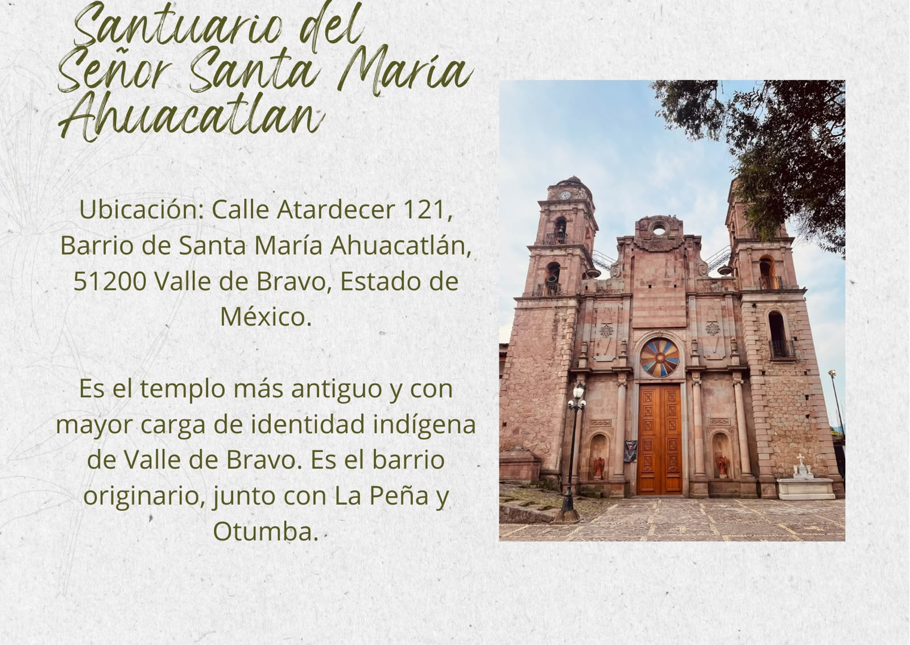
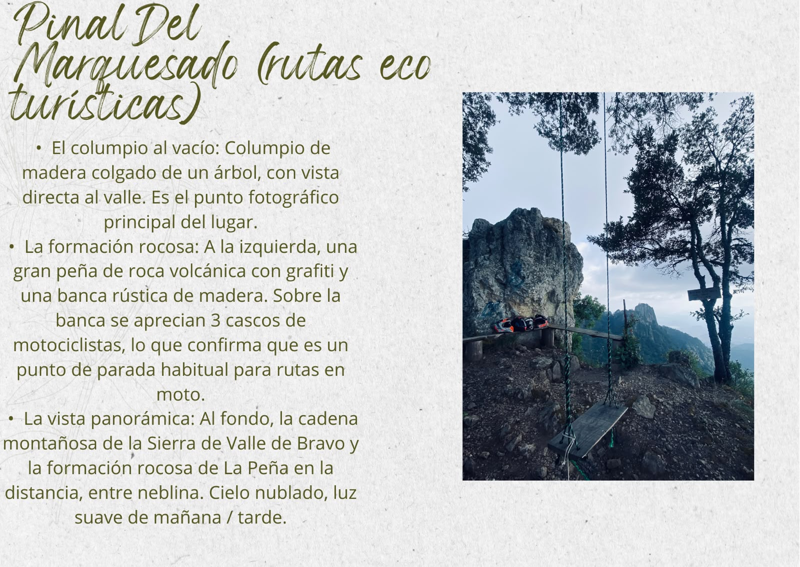
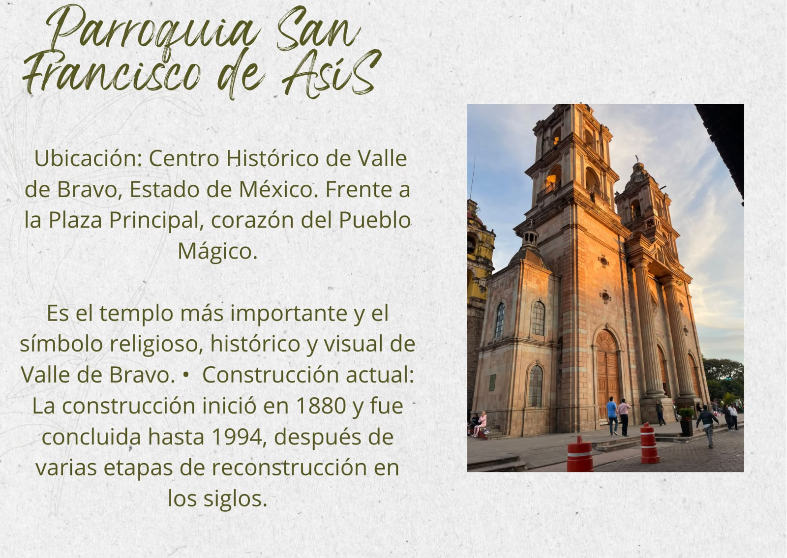
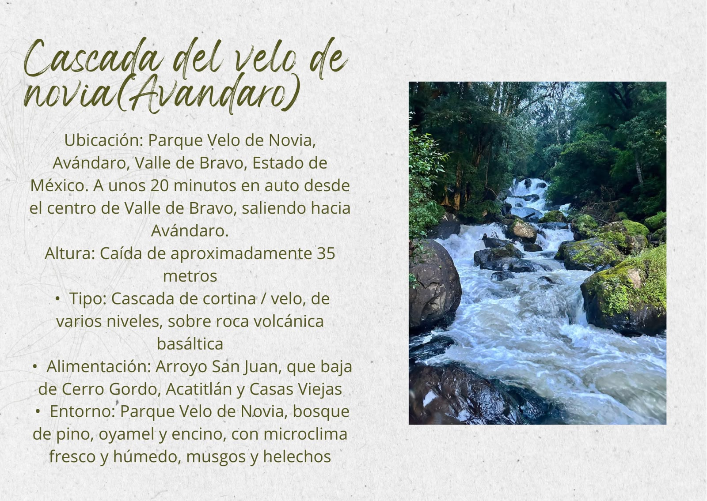
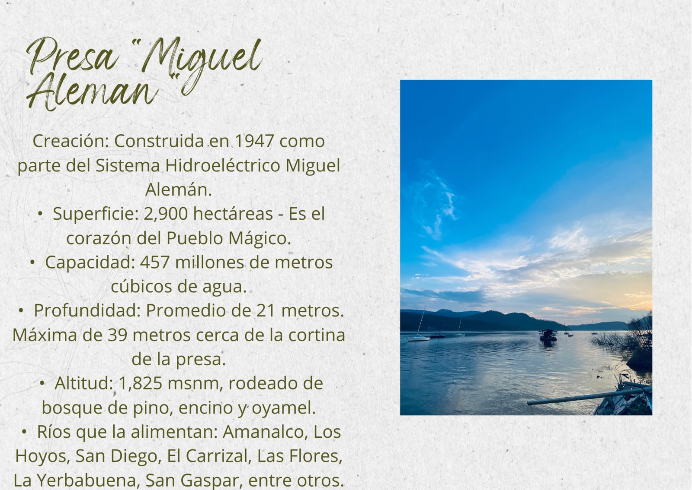
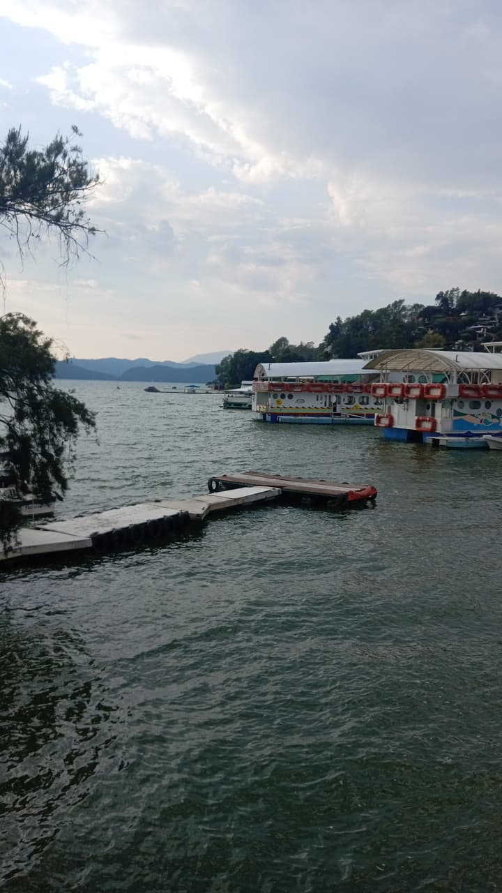

PUEBLO MAGICO
VALLE DE BRAVO
Visita Estos Lugares Encantadores
#Somosvallesanos




Antes y después de Valle de Bravo

Valle de Bravo ha experimentado diferentes transformaciones a lo largo de los años. Sus calles, construcciones y espacios públicos han cambiado conforme ha crecido el municipio.
En la fotografía antigua se observa un ambiente más tranquilo, con menos vehículos y construcciones tradicionales. Actualmente, se aprecia mayor circulación, comercios y actividad turística.
Esta comparación permite conocer la evolución del municipio y reconocer la importancia de conservar su historia y patrimonio cultural.
Laguna de Valle de Bravo

La laguna de Valle de Bravo es uno de los paisajes más representativos del municipio. También conocida como Presa Miguel Alemán, es un importante atractivo natural y turístico del Estado de México.
Sus aguas están rodeadas de montañas y vegetación, creando un paisaje que atrae a numerosos visitantes. Además, es un espacio donde se realizan actividades recreativas y deportivas acuáticas.
La laguna forma parte de la identidad de Valle de Bravo y contribuye a su importancia turística y ambiental.